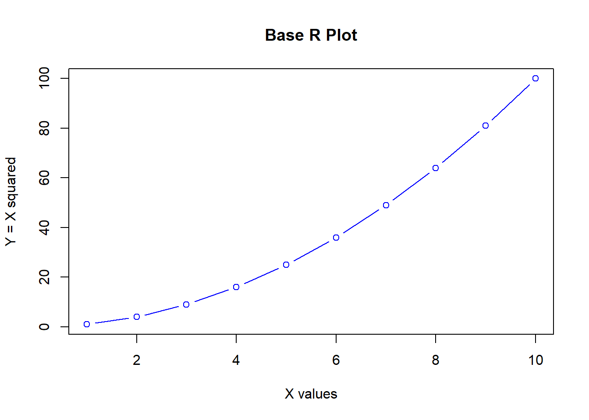
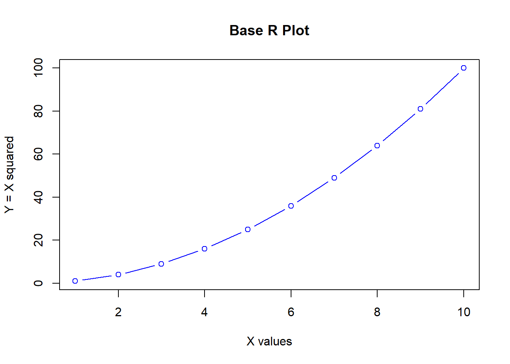
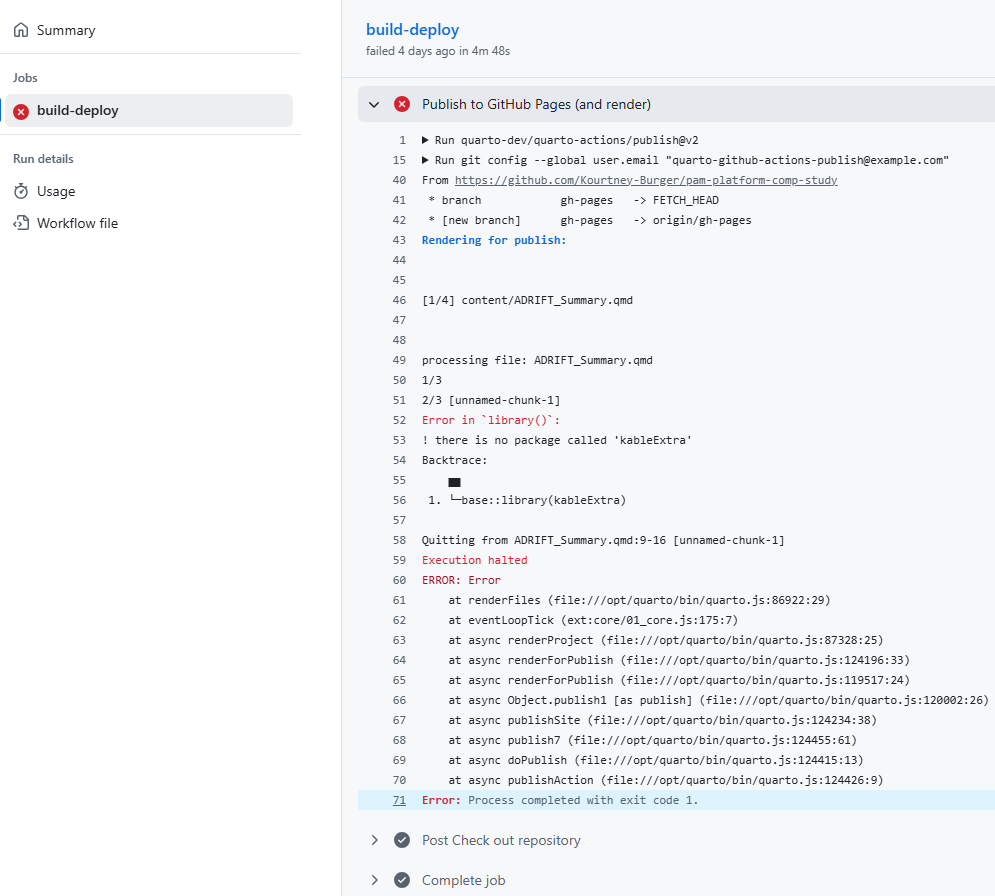

# Generate some sample data
x <- 1:10
y <- x^2
# Create a basic scatter plot
plot(x, y, type = "b", col = "blue",
main = "Base R Plot",
xlab = "X values", ylab = "Y = X squared")
You can add executable code chunks to your pages. See quarto Using R documentation for more information.
# Generate some sample data
x <- 1:10
y <- x^2
# Create a basic scatter plot
plot(x, y, type = "b", col = "blue",
main = "Base R Plot",
xlab = "X values", ylab = "Y = X squared")
If you are working on some code that has additional package dependencies, you may need to add them to your GitHub Actions workflow so those code chunks can be rendered and executed properly.
This template includes a basic render-and-publish.yml workflow that should work for most applications.
If you are encountering errors in your GitHub actions which are not allowing you to publish your pages, you will need to change your workflow.
On your GitHub repository, click on the ‘Actions’ tab and look for failed workflows. You can click on the failed workflow to identify where the action failed. Below is an example fail-point where a required package cannot be found

One solution to this error is to include your additional packages in the basic render-and-publish.yml workflow.
Open your render-and-publish.yml workflow file
Identify the following lines (should be around line 17 & 18)
- name: Install packages (needed for Rmd)
run: Rscript -e 'install.packages(c("rmarkdown", "knitr", "jsonlite"))'Add packages to the list on the second line
Example:
run: Rscript -e 'install.packages(c("rmarkdown", "knitr", "jsonlite", "dplyr"))'Commit the changes and your workflow should re-run without errors
If you are still encountering package errors you may need to set up a renv workflow in your R project. This will manage the package dependencies and ensure the proper packages are installed and loaded for rendered GitHub pages.
renv in the project by running the following code renv::init() (you may need to install the renv package). This will create a locale renv folder and a renv.lock file with the packages you loadedrenv.lock file by running the following code renv::snapshot().github/workflows/render-and-publish-with-code.yml as your GitHub pages actions workflow
.github/workflows/render-and-publish.yml to `render-and-publish.yml.disabled`.github/workflows/render-and-publish-with-code.ymlrenv files are pushed. render-and-publish-with-code.yml should be the only workflow to run when changes are made to the repository